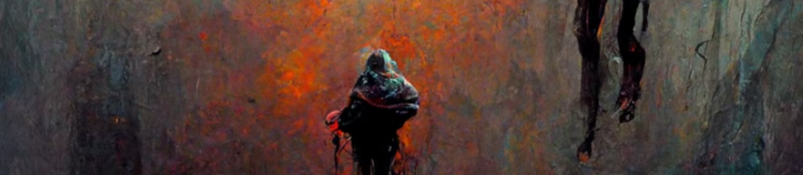

sunage.eth
#NFT Creator | #AI | Appraiser
My artistic evolution
I don't think I have 7 stages. I've always been very introverted. When I was a child, I used to immerse myself in reading stories, from fairy tales to adventure to mystery books.I also used to read local comics, a playboy kind of character that was always in some kind of trouble, and the images in these comics draw my attention. I liked to practice drawing based on these comics. I've enjoyed drawing faces, in particular the eyes.
Another childhood memory was this huge hand drawing in my aunt's bedroom, a very beautiful virgin, which was drawn by a great-grandmother. I've always wanted to be able to draw like that.
Then in high school I took the Architecture career path, which was more technical, but it wasn't really my calling. My best drawings were not really the technical ones, but sitting on the patio of the highschool and drawing the corridor, adding depth and perspective.
I also used like to draw based on pictures of friends, trying to capture them. I guess portraits always were my main interest.
And then I started my IT career, my life got more hectic and didn't draw anything for a long time. I've always wanted to take oil paint classes, but never had/found the time. Sounds like an excuse, but I spent many years working very long hours and didn't really have much energy for anything else.
Back in March of this year, I was searching for something on YouTube and I saw this AI Whisperer video, which immediately caught my attention. Since that day, I haven't been able to stop creating. I keep coming with ideas and of course, I have many that don't really look like I wanted to, and others that exceed my expectations. So this motivates me to finish my work on time, to keep creating.
What's next
My next big stage...that's a good question! I try to keep learning and taming the AI. I recently challenged myself to create fairies portraits and it took me many tries, but I was able to do it, at least to my satisfaction. I recently created my Tezos profile, so I'm working on creating for this marketplace. In addition to that, I put an application to KO, but I haven't received an answer yet. I'm focusing on keep building a community, trying to support my friends and other artists as much as possible and to the best of my ability. I don't really have any marketing or sales skills, so I can only put my best effort. I hope to keep growing and keep making great friends.